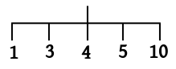

|  |
|---|
x=: 1 3 4 5 10To find the number of highest level branches J provides a monad called
#. Let's put it to use:
# xJ responds with 5. Notice how I described
# in terms of
the input tree, and not as "a function to find the length of a
list".
Next, we shall see the arithmetic operations in J. The operations
for addition, subtraction and multiplication are usual. But J
uses % for division. All operations are done using floating
points (more on this later).
The expression
3 * 4 - 10 % 5is interpreted as $$ 3\times (4 - (10 \div 5)). $$ Amuse yourself by trying to guess the result of
5 - 1 - 1 - 1 - 1 - 1I have talked about a symbol having a monad and dyad interpretation. Here is one example. Used as a dyad
^
means raising to a power, as in:
3 ^ 2But used as a monad, it means $e^x$:
^ 2Next, let us take a look at some functional operators. We shall use the trigonometric functions, which we load as
load'trig'Then we can create
f=: sin + cos g=: ^ * sin h=: sin @ cos i=: ^ @ cosHere $f(x) = \sin x+\cos x$, $g(x) = e^x\sin x$, $h(x) = \sin(\cos x)$ and $i(x)=e^{\cos x}.$ The first two are examples of forks. Next let us see insertion in action. Suppose we want to compute $$ 1 + 3 + 4 + 5 + 10. $$ This means inserting the dyad
+ between each successive
pair. So we can write
+ / 1 3 4 5 10Guess the outcome of
- / 1 1 1 1 1Most often the
/ operator is used to accumulate some result
recursively (e.g., summing). You can use this to find minimum or
maximum as well, .e.g,
<./ 1 4 3 8 4Another important class of operators take slices of dyads to produce monads. The slice could be along the $y$-axis (i.e., fixing some value of $x$) like $y\mapsto f(a,y).$ Or it could be aong the $x$-axis, like $x\mapsto f(x,b).$ Or t could be along the diagonal $t\mapsto f(t,t).$ These are, respectively,
a & f, f & b and f~.